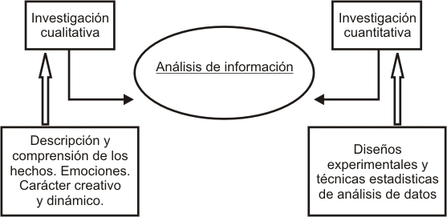
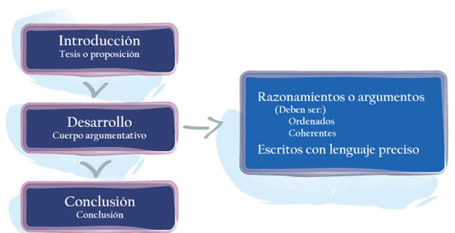
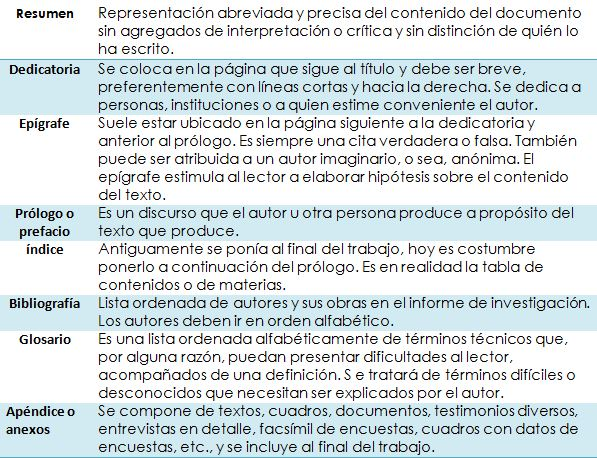

Realizas el análisis de resultados y elaboras conclusiones
Reporte de investigación
El procesamiento de la información
Una vez que hemos obtenido los datos de nuestra investigación, nos enfrentamos al análisis y procesamiento de esa información. Ahora bien, nos enfrentamos a un problema bidimensional para abordar los datos. Por un lado tenemos la investigación de campo, que se desarrolla mucho más en el ámbito cuantitativo; por otro, tenemos la investigación documental, cuyo desarrollo se enfoca, por lo general, en el ámbito cuantitativo. En el siguiente esquema, te presentamos de forma gráfica los aportes de cada uno de estos sistemas de investigación:

El objetivo del análisis de información es obtener ideas relevantes de las distintas fuentes de información, lo cual permite expresar el contenido con el propósito de almacenar y recuperar la información a la que nos enfrentamos. El análisis busca identificar la información que interesa al investigador a partir de una gran cantidad de datos. Así, partimos de la simple recopilación y lectura de textos hasta la interpretación de los mismos. El producto de nuestro análisis debe ser transmitido en un lenguaje sencillo directo, sin abiguedades y con un orden lógico especificando claramente lo que se sabe, lo que no se sabe y las opciones respecto de lo que podría suceder en el futuro.
El trabajo de campo es un trabajo primordial para la búsqueda y hallazgo de datos de nuestra investigación. Los daots obtenidos en el trabajo de campo también siguen un procedimiento específico a través del procesamiento y el análisis de la información que hemos obtenido.
Es posible desarrollar este trabajo a través de cuatro sencillos pasos:
Recomendaciones para elaborar las conclusiones de un reporte de investigación
Las conclusiones son un apartado del reporte de una investigación donde el investigador sintetiza los resultados obtenidos. Éstos son el producto de la demostración o negación de la hipótesis y/o del alcance de los objetivos generales y específicos enunciados inicialmente.
Aunque no existen reglas o normas para la redacción correcta de conslusiones, te presentamos algunas recomendaciones que puedes tomar en cuenta para la formulación de tu reporte final:
Recomendaciones para elaborar la introducción de un reporte de investigación
La introducción de un trabajo de investigación debe redactarse al final, pues digamos que es la carta de presentación de tu capacidad de síntesis y conocimiento del tema. En la menor cantidad de cuartillas que sea posible, expondrás bajo qué circunstancias se decidió y se realizó la investigación. Cuando una persona abre un trabajo de investigación, lo primero que encontrará será la introducción, por ello es muy importante que tomes algunas directrices para estructurar su contenido:
Función del prólogo, el glosario y los anexos
Algunos de los formatos más comunes para presentar un trabajo de investigación documental o de campo son los siguientes:
Cada uno de estos géneros discursivos presenta características únicas que logran que elijamos el mejor vehículo para presentar nuestro reporte final. Como has podido comprobar, siempre existirá una estructura tripartita en los trabajos que entregues:

Es de vital importancia que sepas cómo verter tu opinión en torno a los datos que obtienes de una revisión documental o un trabajo de campo. Es por ello que debes desarrollar ensayos pausibles y confiables.
La función del paratexto en un reporte de investigación
La presentación del texto final, en donde vertemos nuestros resultados, debe considerar diversos aspectos que ayudan a hacer palpable el proceso de investigación que vivimos. Con el término paratexto se denomina al conjunto de las estructuras que rodean a un texto:
El paratexto establece el marco en que se presenta el texto como forma de comunicació. Es eñ eñemento más externo y visible del informe , éste debe referirse al contenido y resumirlo escuetamente, fácilmente visible, pues representa tanto a su contenido como a su autor. A continuación te presentamos a manera de prontuario los aspetos más relevantes para llevar a cabo éste proceso.
